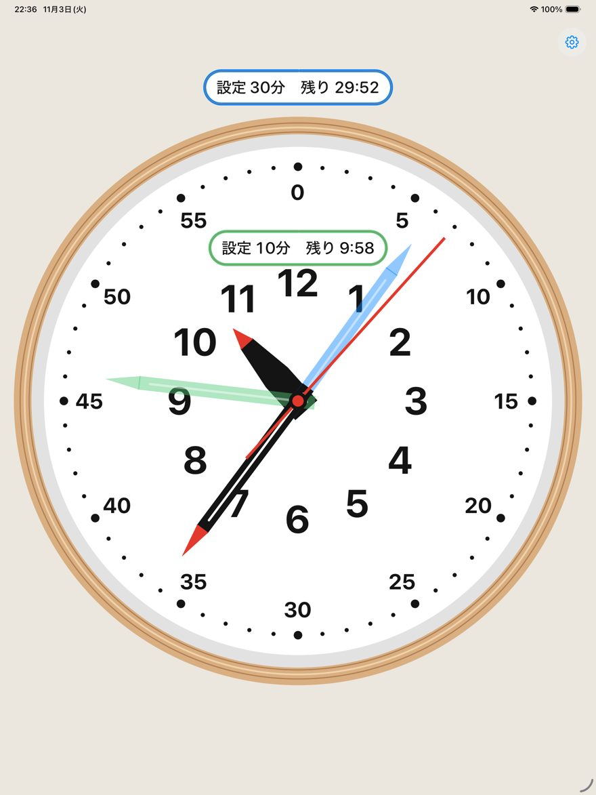
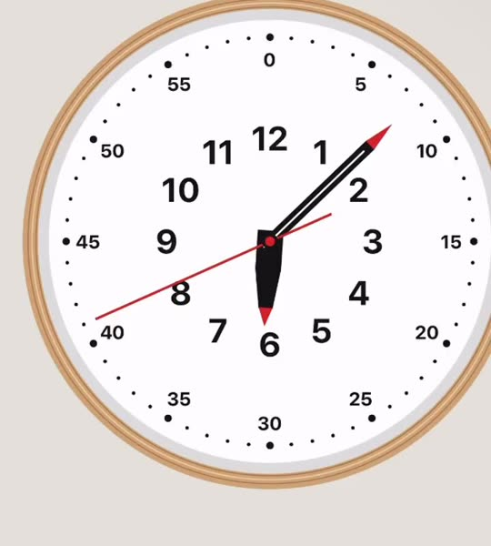
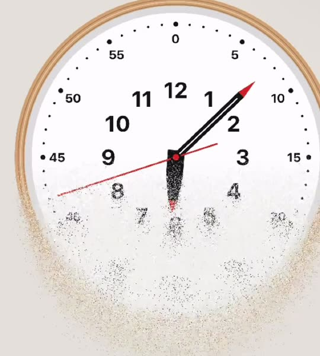
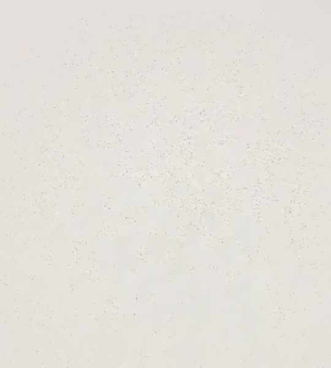
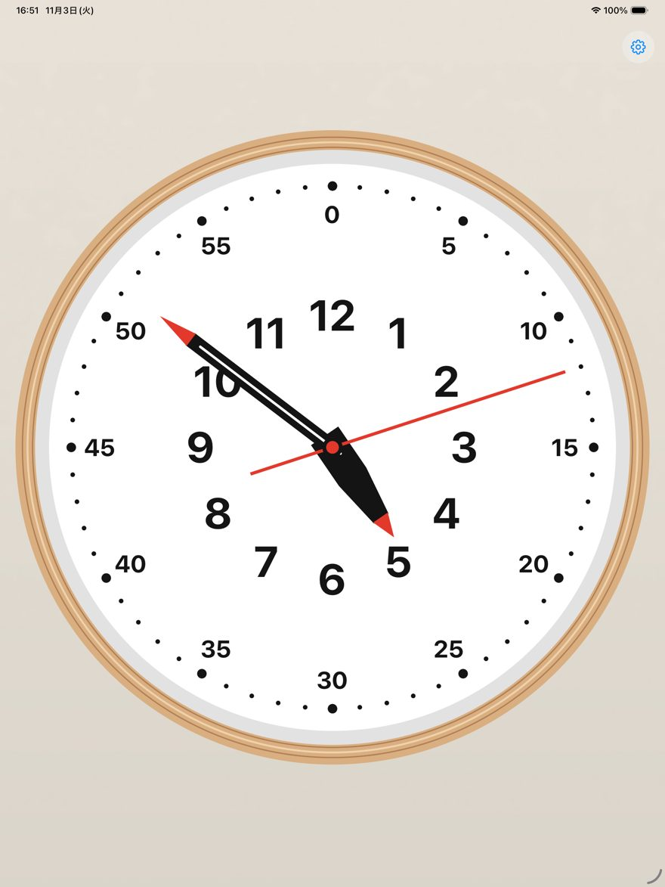
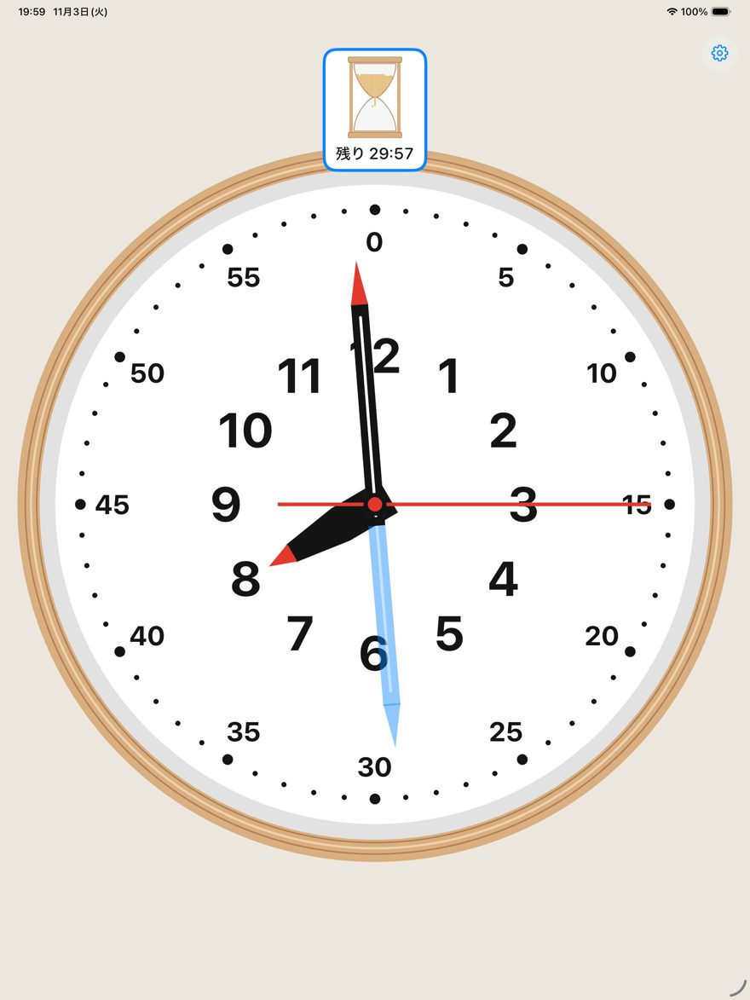
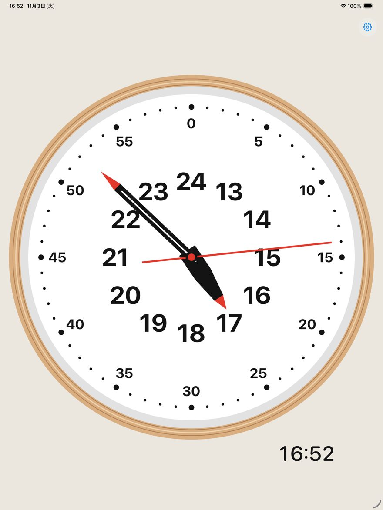
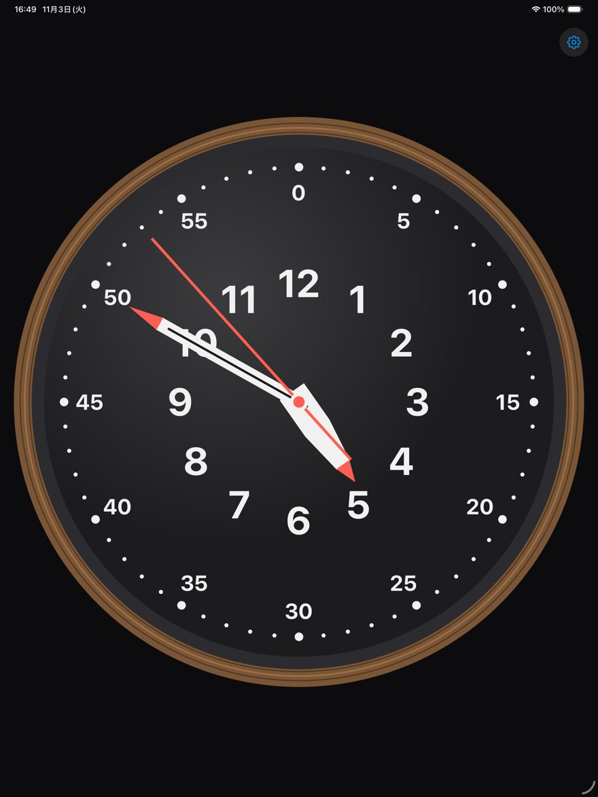

タイマーは2本まで
長針と秒針で、別々のタイマーを置けます。
使い方
長針で「分」、秒針で「秒」。メニューはありません。
色の針と「設定・残り」の表示で、あと何分かを見せます。
時間内に食事が終わらなければ、その家庭は崩壊します（家庭によります）。だから時計も、粒になって崩れ落ちます。
縁をタップすると色が変わります。中央をタップすると、消す確認が出ます。タイマーは2つまで。



設定→「時刻を進める」で、表示だけを先に進められます。端末の時刻は変わりません。
壁掛け時計にする
設定→「壁の背景」で壁を撮影すると、時計の外側に同じ壁の写真が出て、一体化したように見えます。端末が傾いても、12時は真上を保ちます。
撮影した写真は端末の中にだけ保存され、外部に送信されることはありません。いつでも設定から削除できます。

機能

長針と秒針で、別々のタイマーを置けます。

残り時間の見せ方は、デジタル表示と砂時計から選べます。

午後の学習モード（13〜24表示）。デジタル時計は好きな場所へドラッグして置けます。

部屋の明るさに合わせて、落ち着いた色合いにもできます。
時間内に子供の食事が終わらないことは、その家庭の崩壊を意味します（家庭によります）。「時間切れ」は、世界の終わりとして描きました。
料金
ダウンロードは無料。初回起動から14日間は全機能をお試しいただけます。期間が終わっても、無料機能はそのまま使えます。
有料機能：2本目のタイマー、秒針タイマー、砂時計表示、表示時刻を進める、13〜24表示、秒針のスタイル
サポート案内
A. いいえ。通信を行わず、写真や設定は端末内にのみ保存されます。広告やアクセス解析もありません。詳しくはプライバシーポリシーをご覧ください。
A. 表示開始から1時間は自動で消灯しない設定になっています。それ以降は端末の自動ロック設定に従います。長時間の壁掛け利用では、端末の設定で自動ロックを「なし」にしてください。
A. ありません。壁の写真は端末内にのみ保存され、外部に送信されることはありません。アプリの設定からいつでも削除できます。
A. 狂いません。変わるのはこのアプリの表示だけです。端末の時刻設定には一切触れません。
A. ダウンロードは無料で、14日間は全機能をお試しいただけます。その後も無料機能は使い続けられます。全機能のアンロックは¥800の買い切りです（料金の説明）。
お問い合わせ
不具合のご報告・ご要望は、開発者（ナリユキPdM）までご連絡ください。端末の種類とiOSのバージョンを添えていただくと、確認が早くなります。